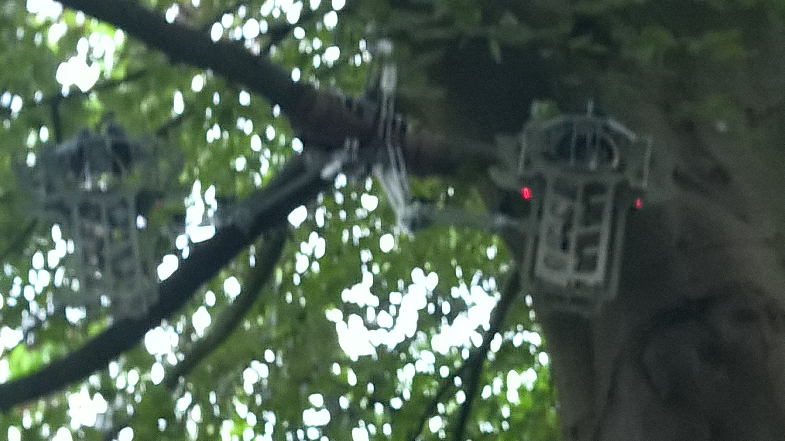
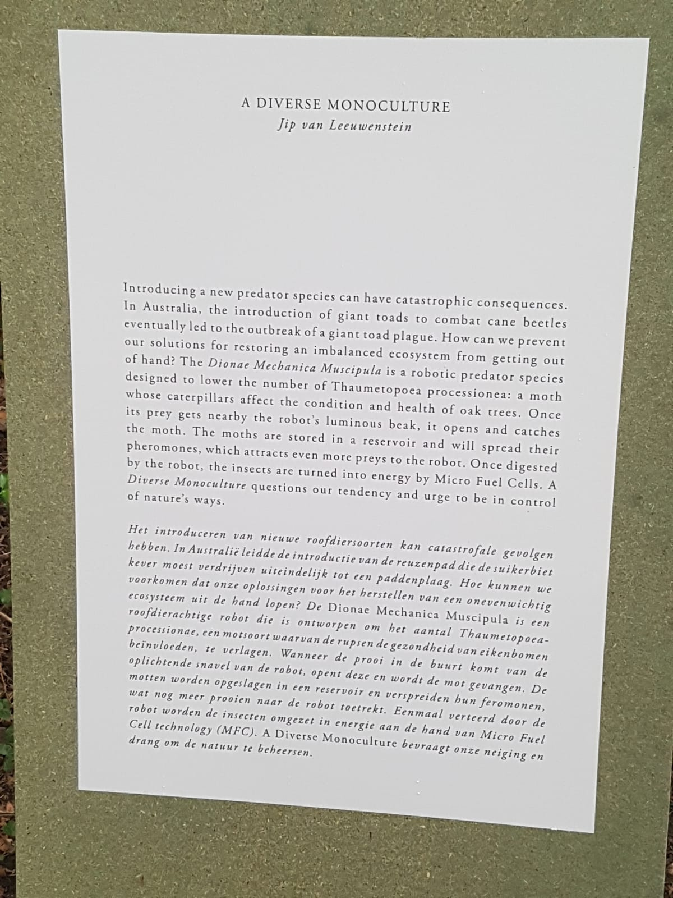
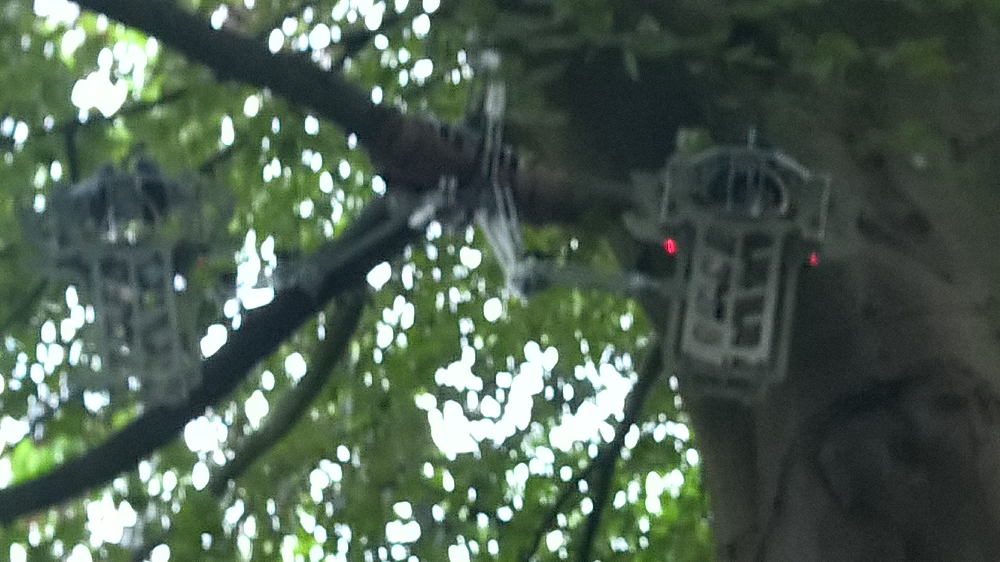
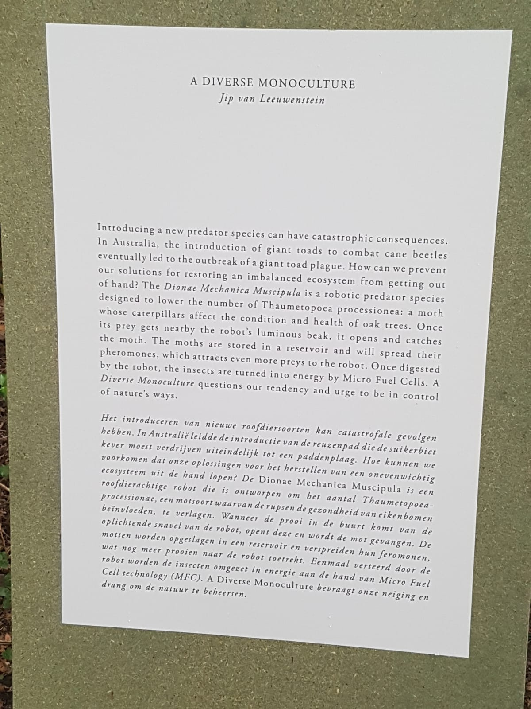

Assignments
Excursion
"A diverse monoculture"
I found the “A diverse monoculture”, or as I tend to call them to others, killer robots, an interesting project. This project
is made by Jip van Leeuwenstein
http://www.jipvanleeuwenstein.nl/a-diverse-monoculture.html
The idea behind “A diverse monoculture” is, that through usage of their Dionae Mechanica
Muscipula, which is a probotic predator, they lower the amount of Thaumetopoea Processionea,
a moth who’s caterpillars are bad for oak trees. They do this via attracting the species
to its mouth, where it traps them This is done though attractive lights. Due to fertile moths
being present in the mouth of this robotic predator, more moths are also attracted to them.
Then using some bio-chemical reaction these moths are digested into energy.
I find this project fascinating due to its possibility to influence the environment in a
meaningful way, without being much of a danger itself to the rest of the biosphere. In part
this is to creating a natural feedback loop, where these robotic species power down when
there is not enough food present, just like real life species. Furthermore this robotic predator
species concept can be used in a wide variety of problems and solutions. Think of the common
honey bee, currently being threatened with colony collapse disorder, where entire bee colonies
just up up and vanish. The usage of robotic species in this regard, not as predators, but
as fertilizers allows them to try and maintain a natural balance, without being too much
of a pest on the rest of the biosphere. Another possibility of this would be as pest control,
where instead of the wide-spread usage of pesticides, which are too potent for too large
of a group, we instead use targeted pest control robots, which only hunt their specific species.
Lastly I would like to add the caution that we should carefully deal with robotics which
fuel themselves of the biosphere, since if its orders are not strict enough, it might start
devouring the parts of the biosphere we actually need to survive, and we wouldn’t like that.
Excursion Images
 



Reflection
Reflection
The excursion to Amsterdam seemed quite interesting from the onset, after having checked their website for some of the projects I went there hoping that there was a lot to do and experience. Sadly enough I was left with very little to actually do there. Since I walked though all of the expo within an hour, including reading the information pieces. As such I was disappointed by the expo, having to travel way longer than the time I spent there. I simply fulfilled the assignment and left for the train back home.